Manual do usuário. Como montar e acompanhar a escala do dia, cobrir vagas, oferecer hora extra, controlar as horas do mês e gerar a folha.
As telas deste manual são da versão de demonstração, com nomes e dados fictícios.
Sumário
Primeiros passos: entrar, navegar e salvar
Semana: o que falta resolver
Quadro do dia: ler a escala
Quadro do dia: editar
Cobrir vagas e oferecer hora extra
Postos, viaturas e imprevistos do dia
Operações
Finalizar a escala
Padrões, efetivo e inspetores
Lançamentos
Mês e horas
Folha
Viaturas (logística)
Ajustes e acessos por setor
No celular
Atalhos e perguntas frequentes
A regra de ouro. O que você muda no Quadro do dia vale só para aquele dia. O que muda nos Padrões vale para todos os dias a partir da data escolhida. Na dúvida, mexa no Quadro do dia.
1. Primeiros passos
Entrar
Abra o endereço do sistema no navegador (Chrome, Edge ou o navegador do celular).
Digite seu nome e a senha do seu setor. O nome aparece no histórico de alterações.
O sistema abre na tela do seu perfil: o escalante vê tudo; inspetor, logística e reserva de armamento veem a folha (veja o capítulo 14).
Navegar
As abas no alto levam às telas: Semana, Quadro do dia, Padrões, Lançamentos, Mês e horas, Folha e Viaturas. Ajustes fica no canto superior direito.
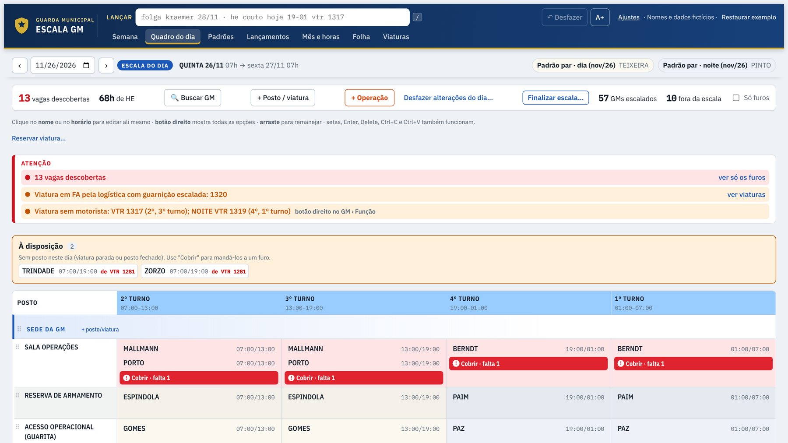
Cabeçalho com as abas, a barra “Lançar” e o Quadro do dia.
Salvar
Não existe botão de salvar: cada alteração é gravada na hora e o aviso “✓ Salvo” aparece no topo. Se duas pessoas mexem ao mesmo tempo e a outra salvou antes, a sua tela abre a versão mais nova e avisa para você conferir a sua última mudança.
Desfazer
Ctrl+Z ou o botão Desfazer voltam as últimas alterações (até 30).
O aviso que aparece embaixo depois de cada ação também tem um botão Desfazer.
No Quadro do dia, “Desfazer alterações do dia…” volta o dia inteiro ao padrão, mostrando antes o que será desfeito.
A letra está pequena?
O botão A+ no topo aumenta o tamanho do texto. O sistema lembra a escolha.
2. Semana: o que falta resolver
É a melhor tela para começar o dia. Mostra os próximos 7 dias de uma vez.
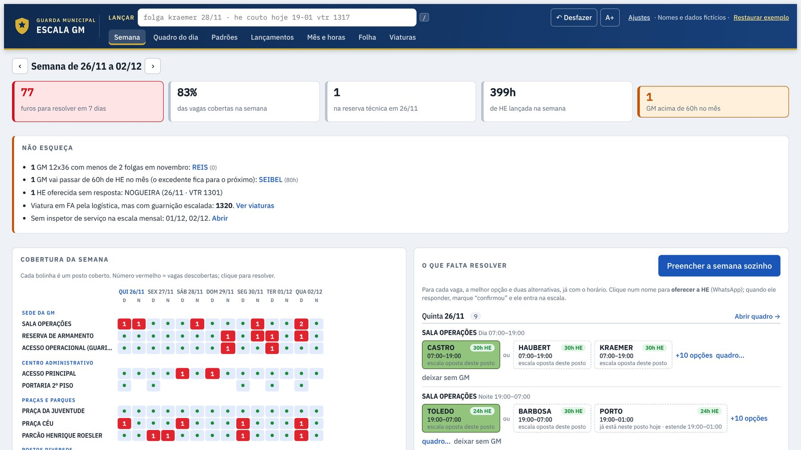
Indicadores da semana, lembretes, cobertura e “O que falta resolver”.
O que tem nela
Indicadores: vagas para resolver, cobertura em %, reserva técnica, HE lançada e GMs acima de 60h.
Não esqueça: GM 12x36 com menos de 2 folgas no mês, quem vai passar de 60h, HE oferecida sem resposta, viatura em FA com guarnição, dia sem inspetor. “ver todos” abre a lista completa.
Cobertura da semana: cada bolinha verde é um posto coberto; o número vermelho é a quantidade de vagas abertas. Clique para ir ao dia.
O que falta resolver: para cada vaga, a melhor opção e duas alternativas, já com o horário. “+ opções” mostra mais nomes.
Resolver uma vaga pela Semana
Clique no nome sugerido.
Escolha “📋 Copiar mensagem e marcar como oferecida”: a mensagem vai para a área de transferência e o GM fica como “aguardando”.
Cole no WhatsApp. Quando ele responder, marque “confirmou” (capítulo 5).
“Deixar sem GM” dispensa a vaga só naquele dia, e ela sai dos avisos.
3. Quadro do dia: ler a escala
O quadro mostra um dia de serviço, das 07h às 07h do dia seguinte, com os quatro turnos: 2º (07–13), 3º (13–19), 4º (19–01) e 1º (01–07).
No alto
‹ data ›: troque de dia. Essa barra fica presa no topo quando você rola a página.
Equipes do dia e da noite com o inspetor de serviço (clique para trocar).
Faixa de resumo: vagas descobertas, horas de HE, GMs escalados, fora da escala e a opção “Só furos”.
Botões 🔍 Buscar GM, + Posto / viatura, + Operação e Finalizar escala….
Cores e marcas
O que aparece
Significa
Botão vermelho “Cobrir · falta N”
Vaga sem GM naquele turno
Caixa laranja “HE oferecida a N · aguardando”
Hora extra oferecida no WhatsApp, esperando resposta
GM em verde com “HE+” e REQ
Hora extra lançada (com requerimento)
Ícone de volante / escudo
Motorista / patrulheiro da viatura
“REMANEJ.”
GM trazido de outro posto
Faixa amarela “VTR/RONDAS FREQUENTES”
Posto coberto por ronda, sem GM fixo
Listras e “Viatura em manutenção (FA)”
Viatura parada; a guarnição foi para À disposição
Etiqueta “sem motorista”
Turno com patrulheiro, mas sem motorista
Etiqueta “horários diferentes”
Dupla da viatura com horários diferentes (só na tela)
Etiqueta “logística: FA”
A logística marcou a viatura como fora de atividade
Faixa “Atenção”
Logo acima do quadro, lista o que precisa de ação: vagas descobertas, HE sem resposta, GM em dois lugares, viatura em FA com guarnição, viatura sem motorista, dupla com horários diferentes, falta de inspetor e dia que já passou sem ser finalizado.
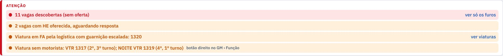
Faixa Atenção.
Fora da escala e à disposição
À disposição: GMs sem posto no dia (viatura parada, posto fechado). Clique para mandar a uma vaga ou devolver ao posto de origem.
Quadrantes de folga, falta, férias, licença, atestado e curso, cada um dividido em diurno e noturno. Folgas em ordem alfabética; férias e afastamentos em ordem de período, com a data de volta.
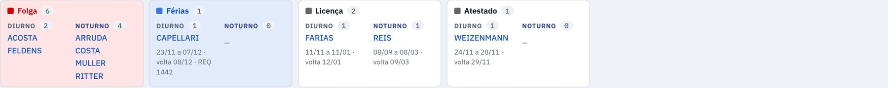
Quadrantes de quem está fora da escala.
4. Quadro do dia: editar
O quadro funciona como uma planilha. Há quatro jeitos de mexer, e todos fazem a mesma coisa:
Jeito
Como
Clicar
No nome para trocar o GM; no horário para mudar a hora; no + pôr GM para colocar alguém.
Arrastar
Segure o GM e solte em outro posto ou turno. Um menu pequeno pergunta o que fazer: remanejar, só um turno, trocar de lugar.
Botão direito
Em qualquer lugar: GM, posto, seção, célula, viatura. Mostra todas as opções daquele item. A opção em negrito é a mesma do clique.
Teclado
Setas para andar, Enter para editar, Delete para tirar, Ctrl+C / Ctrl+V para copiar e colar GM.
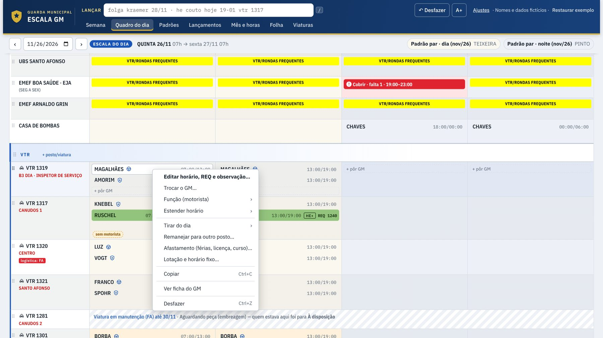
Menu do botão direito sobre um GM.
O que dá para fazer com um GM
Trocar o GM por outro, ou lançar troca de serviço.
Estender horário em hora extra (+6h, +1h, +2h, +3h ou outro horário).
Função na viatura: motorista ou patrulheiro, só hoje ou sempre (no padrão).
Tirar do dia: folga, falta, atestado, compensação de banco de horas etc.
Editar horário, REQ e observação.
Barra “Lançar” (para quem prefere digitar)
No topo, escreva e tecle Enter. Exemplos: folga kraemer 28/11 · he couto hoje 19-01 vtr 1317. A tecla / leva o cursor até ela.
Buscar um GM
Ctrl+F (ou 🔍 Buscar GM) abre a busca no quadro e nos padrões. Mostra onde o GM está no dia ou por que não está, o padrão dele, posto, horário, folgas do mês e HE oferecida. “Mostrar no quadro” rola até ele e pisca. Apertando Ctrl+F de novo, abre a busca normal do navegador.
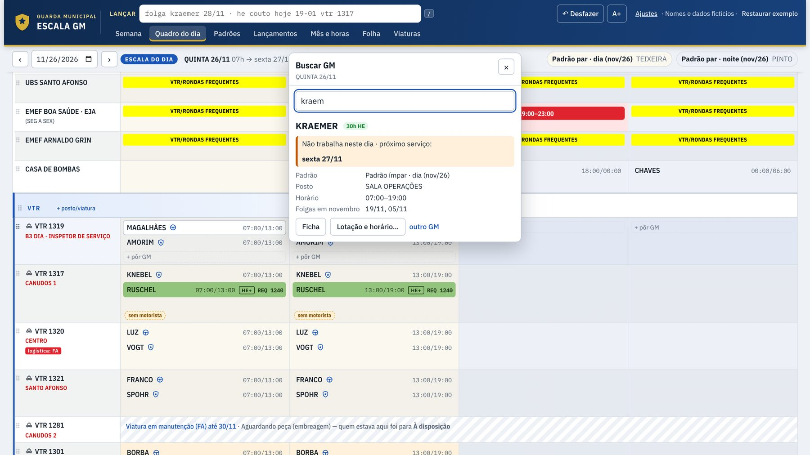
Busca de GM.
Shift + botão direito abre o menu normal do navegador, se você precisar dele. Em campos de texto, o menu do navegador (copiar/colar) continua funcionando.
5. Cobrir vagas e oferecer hora extra
Clique no botão vermelho Cobrir (ou no “+ pôr GM”).
Escolha a duração: 12h ou 6h (para estender o serviço de alguém).
Escolha o tipo: Hora extra, Banco de horas (BH+) ou Remanejar (quem está à disposição ou na reserva técnica).
Clique no GM (ou digite o nome para filtrar).
Escolha “📋 Copiar mensagem e marcar como oferecida” e cole no WhatsApp.
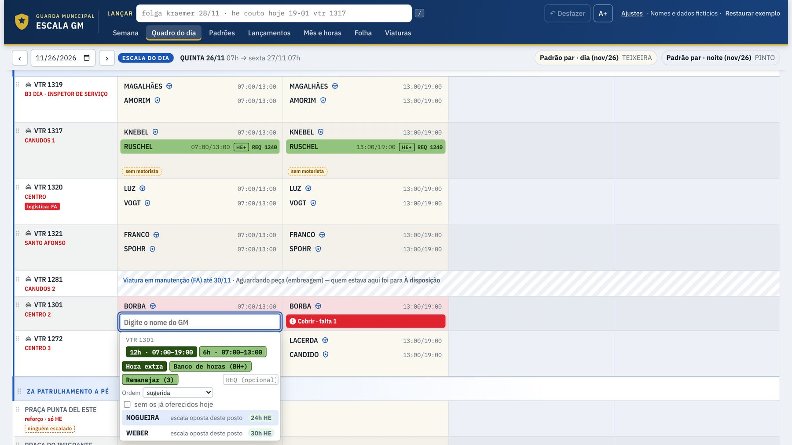
Lista de sugestões com duração, tipo, ordem e horas do mês.
Em que ordem os nomes aparecem
Vem primeiro
Por quê
Vaga de viatura: GMs lotados em viatura
Conhecem a área e a viatura
Membros do grupamento da vaga
Ex.: vaga do GESCOM para quem é do GESCOM
Quem estende colado (vaga de 6h)
Quem sai às 19h estende até 01h; quem saiu da noite às 07h estende até 13h; quem já está no mesmo posto vem antes
EJA / reforço
O GM do dia estende a partir do fim do próprio serviço
Escala oposta do posto, mesmo turno
Conhece o posto, dia com dia, noite com noite
Quem se ofereceu para HE
Pelo Sistema de Folgas ou lançamento
Menos horas no mês
Divide a HE; quem passou de 60h vai para o fim
Operadores de videomonitoramento só aparecem para vagas do videomonitoramento. Quem trabalhou a noite inteira não aparece para o mesmo horário do dia seguinte.
Ordem e filtro
Ordem: sugerida, menos horas no mês ou oferta mais antiga (para revezar).
“sem os já oferecidos hoje” esconde quem já recebeu oferta no dia.
Quem já recebeu oferta aparece com a marca 📲 aguardando, confirmou ou recusou; quem não recebeu hoje mostra a data da última oferta.
Opções ao clicar num GM sugerido
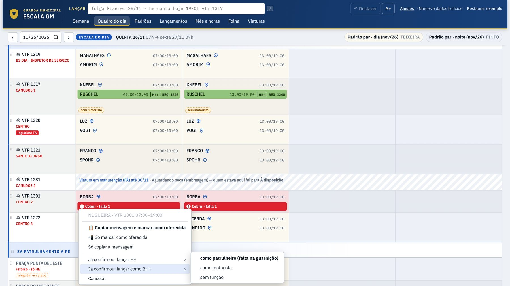
Copiar e marcar, só marcar, só copiar, ou lançar direto se ele já confirmou.
Copiar mensagem e marcar como oferecida (o normal).
Só marcar como oferecida ou Só copiar a mensagem.
Já confirmou: lançar HE (ou BH+). Em viatura, escolha como motorista ou como patrulheiro; a função que falta na guarnição vem primeiro.
Oferecer a vários de uma vez
No rodapé da lista, “📲 Oferecer a vários (WhatsApp)…”: marque os GMs, copie a mensagem e clique em “Ofereci no WhatsApp”.
Quando o GM responder
Clique na caixa laranja da vaga.
Em cada nome: ✓ Confirmou (em viatura, já com a função), ✗ Recusou ou Cancelei o envio.
Ao confirmar, a HE entra na escala com o horário certo. A oferta só fecha quando todos responderem.
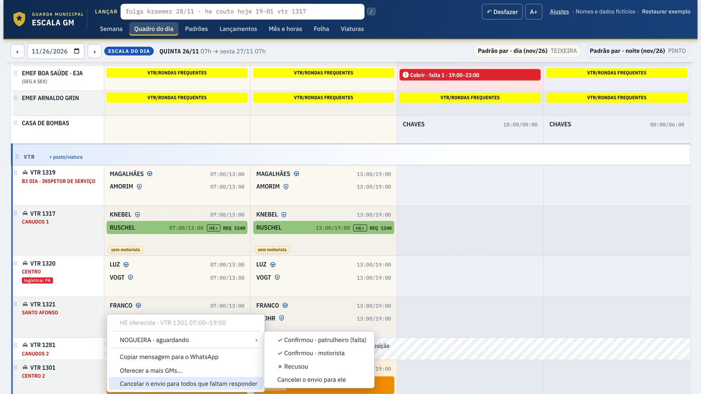
Vaga com HE oferecida e o menu de resposta.
Nenhuma hora extra entra na escala sem a confirmação do GM. Só use “Já confirmou: lançar HE” se ele realmente confirmou.
6. Postos, viaturas e imprevistos do dia
Clique com o botão direito no nome do posto ou da viatura (ou clique nele para abrir o cartão do dia).
Situação
O que fazer
Viatura quebrou
Pôr em manutenção (FA) hoje. A guarnição vai para À disposição. Escolha mostrar como FA ou ocultar da escala e da folha.
Posto não vai funcionar
Fechar o posto hoje, mostrando como FECHADO ou ocultando. Os ocultos ficam na linha “Ocultos hoje”, de onde dá para mostrar de novo.
Trocar a viatura do dia
Usar outra viatura hoje: a lista mostra as livres da frota (QAP, sem guarnição, sem FA e sem reserva). A escala passa a mostrar só o número novo.
Tirar uma viatura só hoje
Excluir viatura › Só neste dia. “Em todos os dias” exclui do cadastro e dos padrões.
Reservar uma viatura
Reservar viatura… (acima do quadro ou na aba Viaturas), com motivo e período. Aparece no quadro e no verso da folha.
Área ou vagas diferentes hoje
No cartão do posto, aba “Só neste dia”.
Posto extra só hoje
+ Posto / viatura e marque “Só em dd/mm”.
Avisos do dia
Em Lançamentos › Avisos: aparecem no quadro e, se marcado, na folha. Clique em “lido” para esconder.
GMs à disposição
Clique no GM: o menu mostra Voltar para o posto de origem (mesmo que a viatura siga em FA) e as vagas abertas no horário dele. Também dá para arrastar até qualquer posto. Hora extra para quem está à disposição só depois de ir para um posto.
Ordenar seções e postos
Arraste pela alça ⠿ à esquerda do nome, ou use o botão direito: “Mover para o topo”, “Mover para… antes de X”, “Mover para a seção…”.
7. Operações
Eventos, reforços especiais, jogos: um anexo da escala que aparece no quadro e na folha só nos dias da operação.
No Quadro do dia, clique em + Operação.
Preencha nome, local, datas, horário de início e fim e observação.
Adicione as viaturas da frota ou outras equipes (ex.: EQUIPE A PÉ 1).
Se a viatura já estiver na escala naquele horário, o painel avisa e deixa marcado “Levar a guarnição da escala junto”: no horário da operação eles vão para ela e depois voltam, sem abrir furo na viatura de origem.
Clique em Criar operação. Use “+ pôr GM” nas equipes para completar.
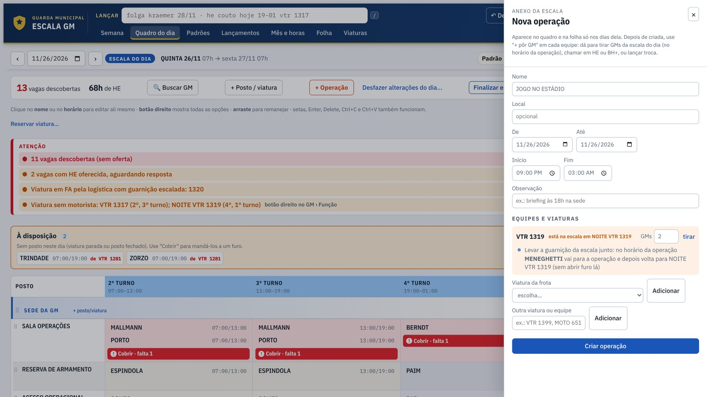
Painel de nova operação.
Nas sugestões de uma vaga de operação, aparece primeiro quem termina o serviço até 2h antes do início. A HE fica no horário da operação.
Excluir uma operação
Botão direito no nome da operação › Excluir a operação… (ou o botão no painel dela). Todos os escalados nela voltam ao lugar de origem; remanejamentos e HEs da operação são desfeitos.
8. Finalizar a escala
Depois que o dia passou (ou quando a escala está pronta), finalize. É isso que leva as horas extras para o controle do mês e libera a folha para inspetor, logística e reserva.
No Quadro do dia, clique em Finalizar escala….
Confira a lista de horas extras. Desmarque quem não fez.
Clique em Finalizar e lançar no controle.
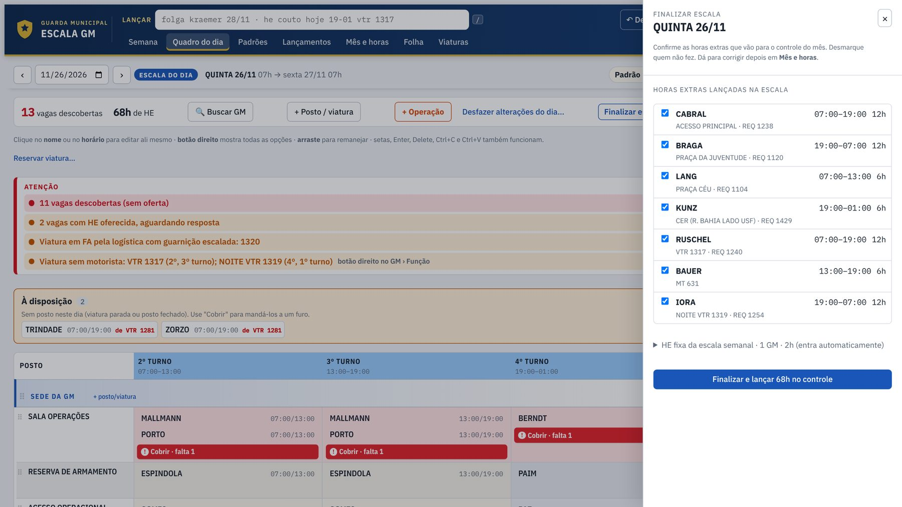
Painel de finalizar a escala.
A HE fixa da semanal entra automaticamente.
Errou? Clique em reabrir ao lado de “✓ Escala finalizada”.
Dia passado sem finalizar aparece na faixa Atenção.
9. Padrões, efetivo e inspetores
Os padrões são o modelo de onde saem todos os dias. Ficam em roxo para não confundir com o Quadro do dia. Toda mudança vale a partir da data mostrada no alto.
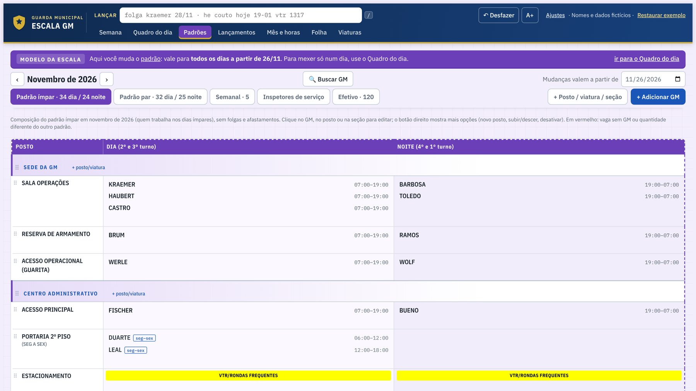
Padrão ímpar, com dia e noite de cada posto.
Abas
Padrão ímpar / par: quem trabalha nos dias ímpares e pares do mês (12x36), de dia e de noite.
Semanal: segunda a sexta, com horário e HE fixa de cada GM.
Inspetores: escala mensal de dia e de noite, rodízio e substituição no período (férias, curso).
Efetivo: todos os GMs. Mude direto na linha: escala, posto, função, grupamentos (ex.: GESCOM), CNH e observação.
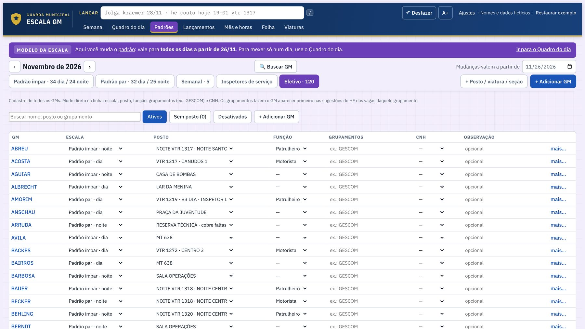
Efetivo.
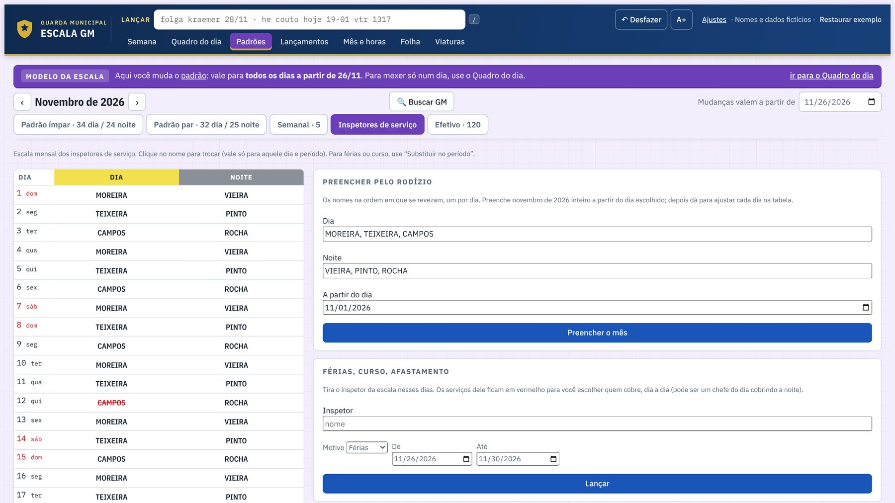
Inspetores de serviço.
Criar posto, viatura, moto, seção ou grupamento
Clique em + Posto / viatura (ou “+ posto/viatura” na seção).
Escolha um Modelo: Viatura 12x36, dia e noite, moto, posto fixo, posto semanal (seg–sex), Reforço / EJA (horário e dias, coberto com HE), ou copie um posto existente.
Dê o nome, escolha a seção e se ele existe nos dois padrões ou só no ímpar / só no par.
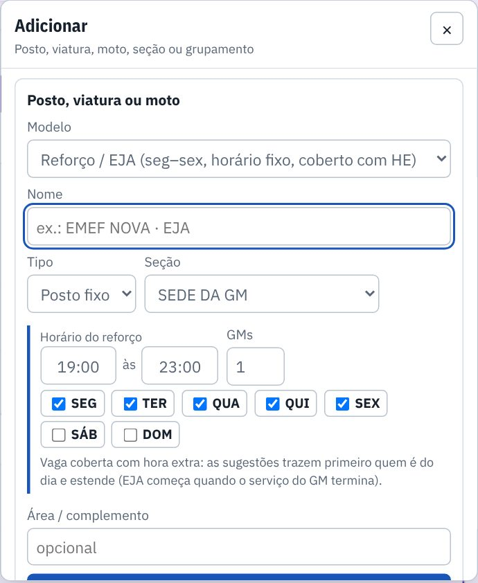
Janela Adicionar com o modelo Reforço / EJA.
Atalho: botão direito num posto › Copiar como modelo; depois, botão direito numa seção › Colar modelo aqui.
Grupamento (motos, GOC…): só aparece no quadro quando tem GM escalado. Nos padrões, os postos sem GM ficam recolhidos (“mostrar N sem GM”).
Postos excluídos podem ser reativados ou apagados da lista em Postos excluídos.
Colocar ou mudar um GM no padrão
Clique em “+ pôr GM” na célula do dia ou da noite, ou clique no GM para mudar lotação, horário fixo, função e equipe (botão direito também). O botão + Adicionar GM cadastra alguém novo.
10. Lançamentos
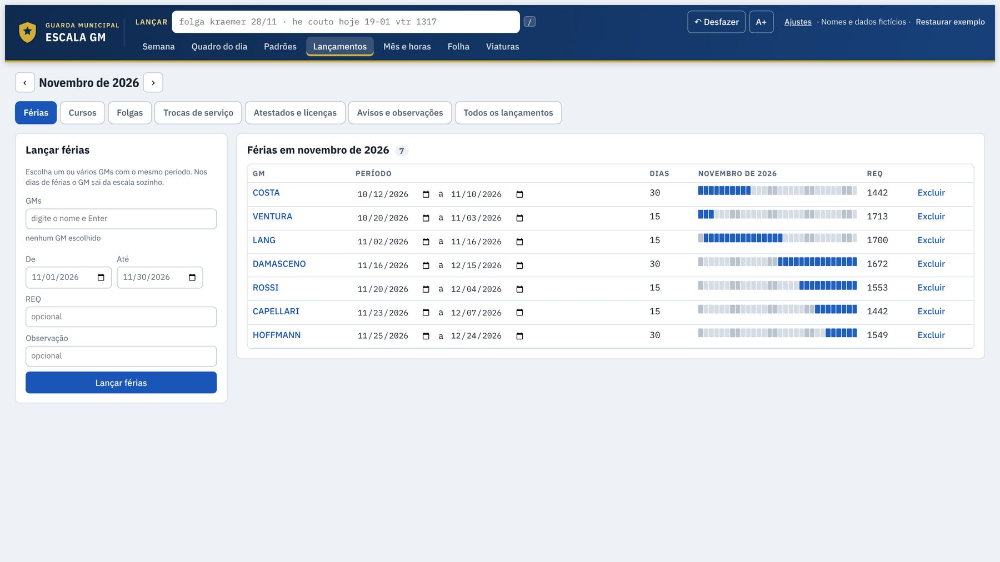
Lançamentos, seção de férias.
Seção
Para quê
Férias
Um lançamento tira o GM da escala em todo o período.
Cursos
Afastamento por curso, com período.
Folgas
Folgas do mês. Importa do Sistema de Folgas (somente leitura) e avisa as mudanças, respeitando a janela de escolha (dia 15 ao 25). Também aceita CSV.
Trocas de serviço
Quem sai, quem cobre e a devolução.
Atestados e licenças
Afastamentos por período.
Avisos e observações
Aparecem ao abrir o dia; podem sair na folha; marcados como lidos.
Todos
Tudo junto, com busca por GM ou REQ.
O selo das folgas no topo avisa quando o Sistema de Folgas tem alterações ainda não aplicadas. Clique nele para ver e aplicar.
11. Mês e horas
O controle de hora extra de cada GM no mês.
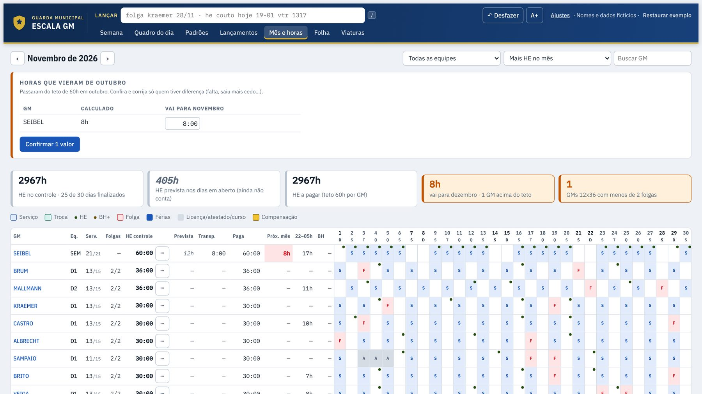
Mês e horas: horas que vieram do mês anterior, indicadores e a tabela por GM.
Coluna
O que é
HE controle
Horas dos dias já finalizados. Dá para digitar um ajuste; “⋯” mostra dia a dia.
Prevista
HE da escala nos dias ainda não finalizados (só previsão).
Transp.
Horas que passaram do teto no mês anterior.
Paga
O que será pago no mês, até o teto de 60h.
Próx. mês
O que passa para o mês seguinte.
22–05h
Parte noturna, informativa para o RH.
BH
Saldo de banco de horas.
Horas que vieram do mês anterior: confira os valores e clique em Confirmar. Corrija só quem teve diferença.
Filtros por equipe, ordem (mais HE no mês) e busca por GM.
O calendário à direita mostra o mês de cada GM: serviço, troca, HE, BH+, folga, férias, afastamentos e compensação.
12. Folha
O documento oficial do dia, no formato que vai para os inspetores.
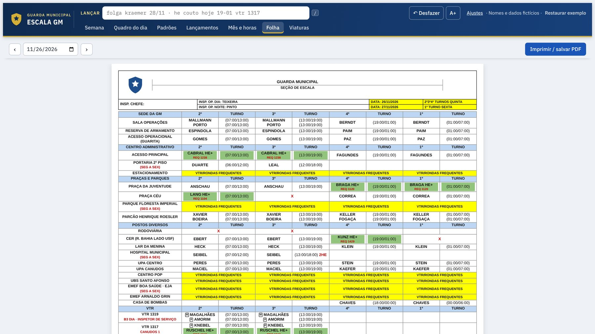
Frente da folha.
Cabeçalho com os brasões, inspetor chefe, inspetores do dia e da noite e as datas.
Na viatura, M (motorista) e P (patrulheiro) antes do nome; HE+ e REQ.
No verso: banco de horas, folgas/faltas, trocas, atestados/licenças/cursos, férias e viaturas reservadas, separados em diurno e noturno.
Imprimir / salvar PDF: papel ofício, frente e verso.
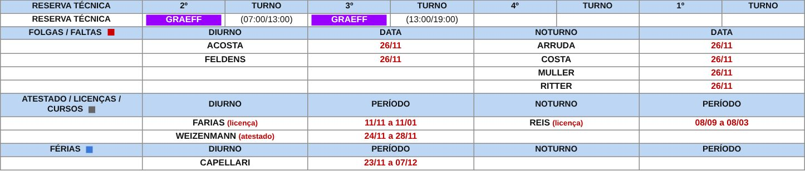
Verso da folha.
Não saem na folha: viatura em FA sem guarnição, viatura sem ninguém escalado, postos ocultos, “SEG A SEX” no fim de semana e os avisos internos (“sem motorista”, “horários diferentes”).
13. Viaturas (logística)
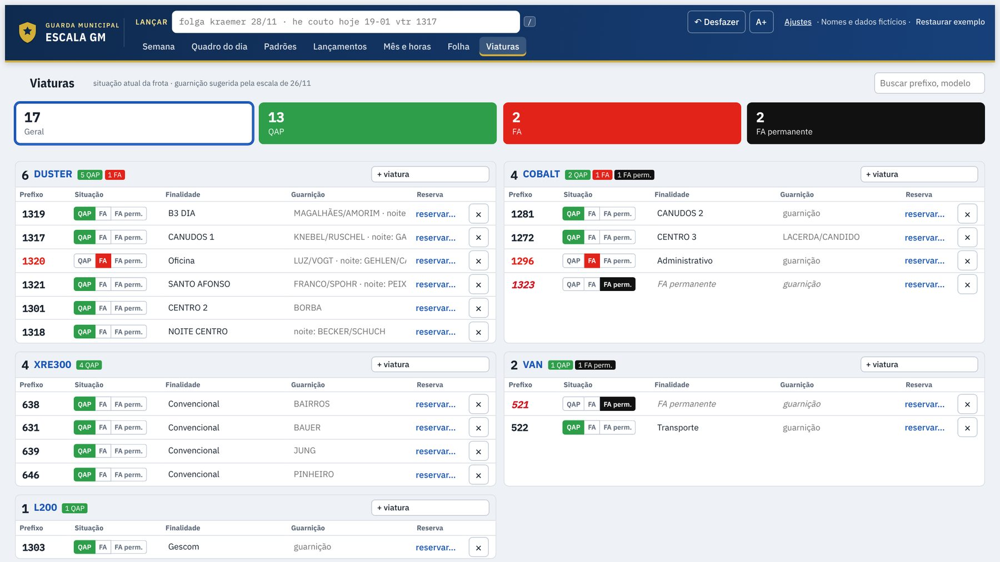
Frota por modelo, com situação, finalidade, guarnição e reserva.
Marque cada viatura como QAP, FA ou FA permanente.
reservar…: motivo e período; a reserva aparece no quadro e na folha. O × cancela.
A coluna “Guarnição” mostra quem está na viatura hoje, pela escala.
Viatura em FA com guarnição escalada gera aviso no quadro do escalante.
“+ viatura” acrescenta um prefixo ao modelo; “Novo modelo” cria um grupo.
14. Ajustes e acessos por setor
Ajustes (escalante)
Alternância das equipes 12x36: um dia de referência e quais equipes trabalham nele.
Cabeçalho da folha, brasões, inspetor chefe, teto de HE.
Histórico de alterações: quem mudou o quê e quando (não pode ser apagado).
Acessos
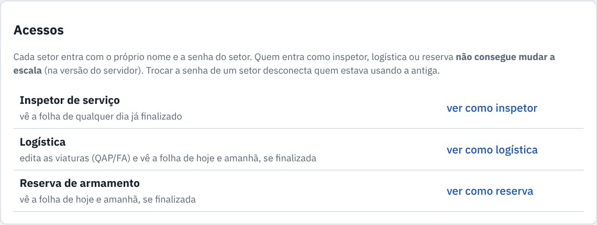
Acessos em Ajustes.
Perfil
Vê
Pode mudar
Escalante
Tudo
Tudo
Inspetor de serviço
A folha de qualquer dia já finalizado
Nada
Logística
Viaturas e a folha de hoje e amanhã, se finalizada
Só as viaturas
Reserva de armamento
A folha de hoje e amanhã, se finalizada
Nada
Em Ajustes › Acessos, digite uma senha (mínimo 6 caracteres) para o setor e clique em Definir.
Passe a senha só para o setor. Cada pessoa entra com o próprio nome e essa senha.
Para trocar, defina outra: quem usava a antiga é desconectado em até 1 minuto. tirar acesso bloqueia o setor.
Enquanto o dia não está finalizado, quem só visualiza vê o aviso abaixo no lugar da folha. Use “ver como…” para conferir a tela de cada setor.
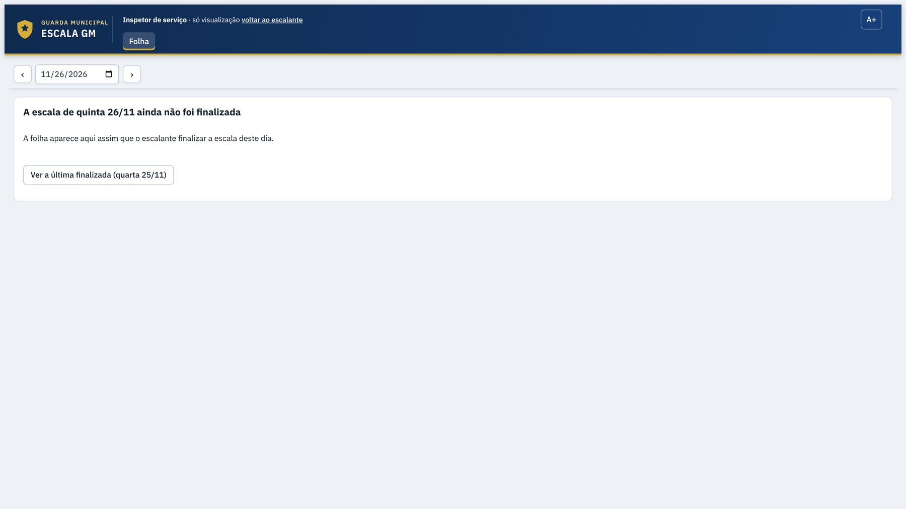
O que o inspetor vê antes da finalização.
15. No celular
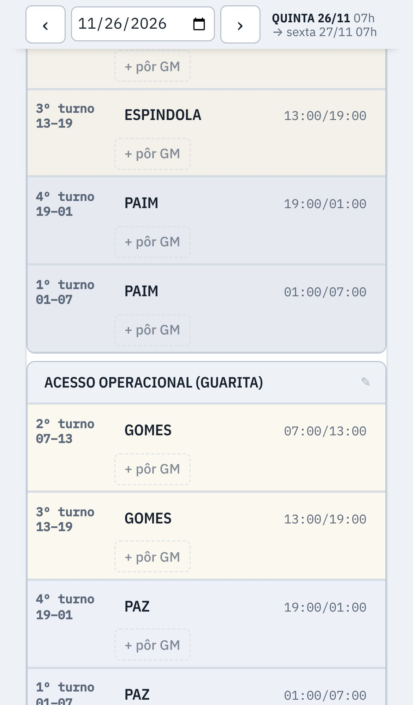
Quadro do dia no celular.
Cada posto vira um cartão, com os quatro turnos em linhas.
Toque no nome ou no horário para editar.
Toque longo abre o mesmo menu do botão direito.
A barra de datas fica fixa no alto, numa linha só.
As janelas abrem de baixo para cima.
Quem só visualiza (inspetor, logística, reserva) recebe a folha atualizada sozinha a cada poucos minutos e ao voltar para a aba.
16. Atalhos e perguntas frequentes
Atalhos de teclado
Tecla
Faz
Ctrl+Z
Desfaz a última alteração
Ctrl+F
Busca um GM (de novo: busca do navegador)
/
Vai para a barra “Lançar”
Setas
Andam pelas células do quadro
Enter ou F2
Edita a célula ou o GM selecionado
Delete
Tira o GM selecionado do dia
Ctrl+C / Ctrl+V
Copia um GM e cola em outra célula
Esc
Fecha menus e janelas
Shift + botão direito
Menu normal do navegador
Perguntas frequentes
Mudei algo no quadro e o padrão não mudou. Correto: o quadro do dia vale só para aquele dia. Para mudar todos os dias, use Padrões.
Um posto da semanal não mostra furo no fim de semana. Postos marcados seg–sex não têm vaga no fim de semana. Postos de todos os dias com GM da semanal mostram a vaga dele para cobrir no sábado e no domingo.
A HE não aparece no controle do mês. Só entram as horas de dias finalizados. Finalize o dia (capítulo 8).
O inspetor diz que não vê a folha. O dia ainda não foi finalizado, ou a reserva/logística está tentando ver um dia além de amanhã.
A viatura aparece com “sem motorista”. Há patrulheiro e ninguém como motorista. Botão direito no GM › Função › Motorista.
Lancei algo errado.Ctrl+Z, o “Desfazer” do aviso, ou apague em Lançamentos.
Apareceu “A escala foi alterada em outro computador”. Outra pessoa salvou antes. A tela já está com a versão nova: confira e refaça a sua última mudança, se precisar.
Palavras usadas no sistema
Termo
Significado
Furo / vaga
Posto ou viatura sem GM num turno
HE / BH+
Hora extra paga / crédito no banco de horas
QAP / FA
Viatura em condições / fora de atividade
Remanejar
Levar um GM de um posto (ou da disposição) para outro, no dia
Padrão ímpar / par
Equipes 12x36 que trabalham nos dias ímpares / pares do mês